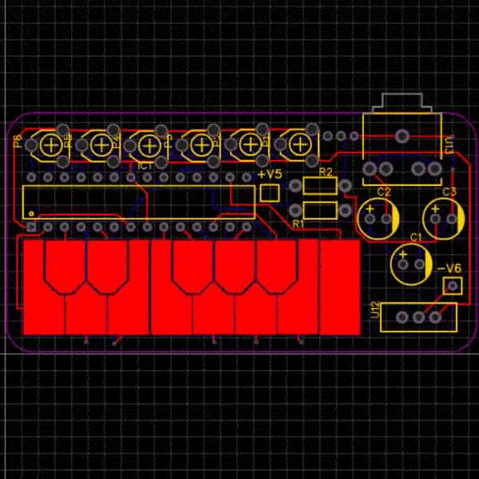
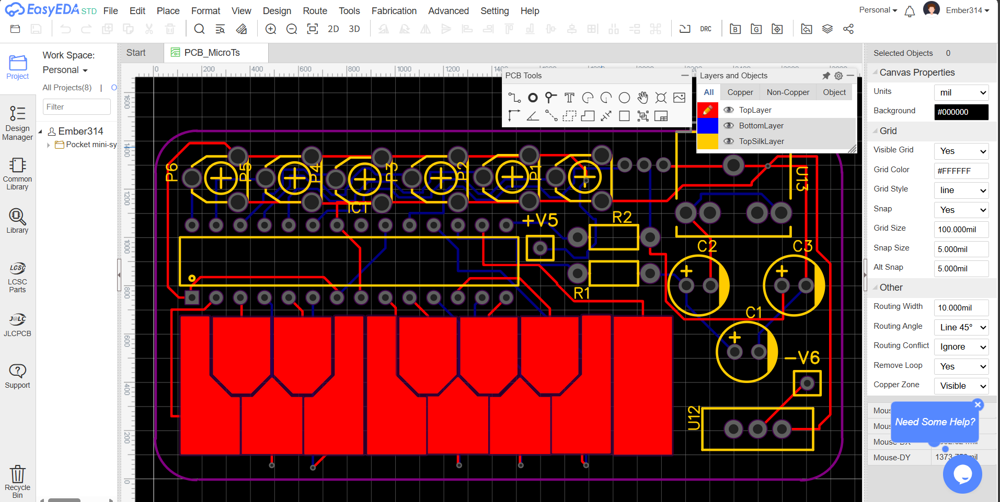

Credit Card Sized Synth
I have always been facinated by small gadgets. Whether it be palm top computers or pocket sized videogames.
For this project I wanted to make a tiny synthesizer that can fit in a credit card sized enclosure. I used an ATmega32u4 microcontroller, which is the same chip used in the popular Arduino boards. The synth has a simple 1 octave keyboard, and can produce a variety of sounds using different parameters and effects.
Using the synthesis library called Mozzi, I was able to simulate the effects of an analog monophonic synth.
I have prototyped my design on a breadboard, then wrote the schematic for it, then I created a PCB trace design for it on EasyEDA. At that time, I didn't have a desktop computer so I was forced to design this in the web browser using EasyEDA web. As my first prototype, I soldered everythign onto a perfboard from Amazon.
Originally I wanted it to fit inside an altoids tin, as that is a common theme for DIY electronics projects. But I was inspired by other credit card sized projects I saw online.
Programming the AtMega32u4 was simple, I loaded the code onto a regular Arduino, then extracted the chip from it onto my board.
Currently, the knobs are very simple, they control the envelope shape, filters, and lfo frequency.
Overall, this was a fun project to work on, and I am happy with how it turned out. I have a few ideas for future improvements, such as adding more features, or adding a display to show the current settings.
I recently recovered it from a box of projects I have in my room, and it doesn't seem to work anymore. When I revisit this I will film more videos of it and add more features.